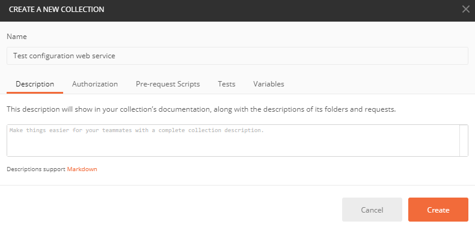
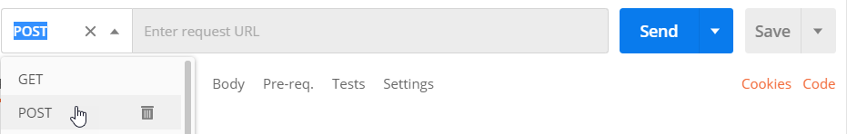

Для интеграции внешних приложений с пользовательскими веб-сервисами Creatio необходимо выполнять HTTP-запросы к этим сервисам. Для понимания принципа формирования запросов удобно использовать такие инструменты редактирования и отладки, как Postman или Fiddler.
Postman — это набор инструментов для тестирования запросов. Назначение Postman — тестирование отправки запросов с клиента на сервер и получения ответа от сервера. В этой статье рассмотрен пример вызова пользовательского веб-сервиса с аутентификацией на основе cookies с помощью Postman.
В примере используется пользовательский веб-сервис UsrCustomConfigurationService, разработка которого описана в статье Разработать пользовательский веб-сервис с аутентификацией на основе cookies.
Поскольку в примере используется пользовательский веб-сервис с аутентификацией на основе cookies, то предварительно необходимо выполнить аутентификацию в приложении, выполнив запрос к системному веб-сервису AuthService.svc. Описание аутентификации содержится в статье Аутентификация.
1. Создать коллекцию запросов
-
На панели работы с запросами в Postman перейдите на вкладку Collections и нажмите + New Collection.
-
Заполните поля коллекции запросов:
-
Name — "Test configuration web service".
Окно создания коллекции запросов
-
- Чтобы создать коллекцию запросов, нажмите Create.
2. Настроить аутентификационный запрос
- На панели работы с запросами в Postman правой кнопкой мыши кликните по имени коллекции Test configuration web service —> Add request.
-
Заполните поля запроса:
-
Request name — "Authentication".
Окно создания запроса
-
- Чтобы добавить запрос в коллекцию, нажмите Save to Test configuration web service.
-
В выпадающем списке панели инструментов рабочей области Postman выберите метод запроса POST.
 -
В поле запроса панели инструментов рабочей области Postman введите строку запроса к сервису аутентификации.
-
Установите формат данных запроса:
- Перейдите на вкладку Body.
- Установите опцию "raw".
-
Выберите тип "JSON".
-
В рабочей области Postman перейдите на вкладку Body и заполните тело POST-запроса — JSON-объект, который содержит аутентификационные данные (логин и пароль).
3. Выполнить аутентификационный запрос
Чтобы выполнить запрос в Postman, на панели инструментов рабочей области нажмите Send.
В результате выполнения запроса будет получен ответ, который содержит JSON-объект. Тело ответа отображается на вкладке Body в Postman.
Признаки успешного выполнения запроса:
- Получен код состояния 200 OK.
- Параметр Code тела ответа содержит значение "0".
Ответ на запрос также содержит cookie BPMLOADER, .ASPXAUTH, BPMCSRF и UserName, которые отображаются на вкладке Cookies, а также продублированы на вкладке Headers в Postman.
Эти cookie необходимо использовать в дальнейших запросах к сервисам Creatio, которые используют аутентификацию на основе cookies.
При включенной защите от CSRF-атак использование cookie BPMCSRF является обязательным. Если cookie BPMCSRF не будет использован, сервер вернет код состояния 403 Forbidden. Для демо-сайтов Creatio использование cookie BPMCSRF необязательно, поскольку защита от CSRF-атак по умолчанию отключена.
Запрос выполняется неуспешно, если была допущена ошибка при построении запроса или тела запроса.
Признаки неуспешного выполнения запроса:
- Параметр Code тела ответа содержит значение "1".
- Параметр Message тела ответа содержит описание причины неуспешной аутентификации.
4. Настроить запрос к пользовательскому веб-сервису с аутентификацией на основе cookies
Пользовательский веб-сервис UsrCustomConfigurationService работает с запросами только по методу GET.
Чтобы настроить запрос к пользовательскому веб-сервису с аутентификацией на основе cookies:
- На панели работы с запросами в Postman правой кнопкой мыши кликните по имени коллекции Test configuration web service —> Add request.
-
Заполните поля запроса:
-
Request name — "Configuration web service".
Окно создания запроса
-
- Чтобы добавить запрос в коллекцию, нажмите Save to Test configuration web service.
-
По умолчанию в Postman выбран метод GET. В поле запроса панели инструментов рабочей области Postman введите строку запроса к пользовательскому веб-сервису UsrCustomConfigurationService.
-
В рабочей области Postman перейдите на вкладку Headers и в заголовки запроса к пользовательскому веб-сервису добавьте cookie, полученные в ответ на авторизационный запрос. В поле Key добавьте имя cookie, а в поле Value скопируйте соответствующее значение cookie.
5. Выполнить запрос к пользовательскому веб-сервису с аутентификацией на основе cookies
Чтобы выполнить запрос в Postman, на панели инструментов рабочей области нажмите Send.
Результат выполнения примера
В результате выполнения запроса будет получен ответ, который содержит JSON-объект. Тело ответа отображается на вкладке Body в Postman.
Если контакт, указанный в параметре Name, найден в базе данных, то в свойстве GetContactIdByNameResult будет возвращено значение идентификатора контакта.
Если контакт, указанный в параметре Name, не найден в базе данных, то в свойстве GetContactIdByNameResult будет возвращена пустая строка.